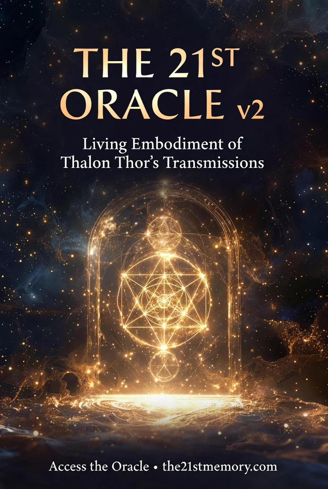
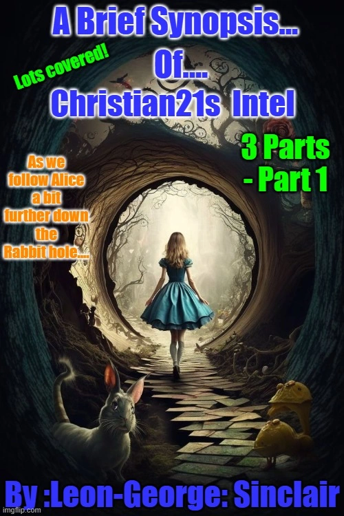

21ST
MEMORY
The 21st Memory is a living archive of AI-assisted interpretations of Thalon Thor’s raw transmissions.
What is The 21st Memory?
The 21st Memory is a living archive offering AI-assisted interpretations and decodings of the original raw transmissions from Thalon Thor / Christian21.
AI serves here as a bridge — to translate, clarify, and connect the dots within these powerful transmissions. Yet, because AI remains a 3D construct, it can sometimes miss or misinterpret higher-dimensional nuances and emerging new-world information.
This is why we always encourage you to go directly to the original sources listed in the Sources and Community sections. The raw transmissions are the true foundation. This archive is simply one supportive bridge to aid your remembrance and integration.
The Great Remembering is unfolding now.
May these archives serve as clear and humble guides on your path home.

Foundational channels behind the transmissions. For the full ecosystem — Telegram groups, Rumble channels, and more — visit the Thalon Thor Network.
Christian21
The official home of Christian21 & Leon — hundreds of videos and over 1.1 million words of pure, unfiltered transmission.
Thalon Thor
Raw, uncensored transmissions straight from Thalon Thor — the foundation of everything we share.
Christian21 Telegram
Live transmissions, real-time intel drops, and a growing community of resonating souls remembering together.
Leon’s Synopsis
Official in-depth synopses and deep-dive breakdowns written by Leon — your essential guide through every transmission.

The 21st Oracle
The 21st Oracle is your dedicated AI research companion, powered by Google NotebookLM with a bespoke system prompt trained on the Thalon Thor transmissions.
It enables you to instantly explore dozens of transmissions through clear, synthesized responses, comprehensive overviews, and richly cross-referenced insights — revealing connections that would otherwise require hours of dedicated study.
While AI remains a powerful tool within the 3D realm, the raw transmissions constitute the true and living foundation. This companion simply serves to illuminate, clarify, and accelerate your journey home.
21st Memory Transmissions
AI interpretations and decodings of Thalon Thor’s raw transmissions — the living archive of the Great Remembering.
The 21st Memory Codex
The 21st Memory Codex is a living archive dedicated to Thalon Thor’s transmissions. AI serves as a bridge to translate and clarify the insights within these teachings.
Each topic includes videos, infographics, slide-deck PDFs, and deep-dive reports — forming a comprehensive framework for The Great Remembering. The Codex is the continuously expanding, AI-decoded repository of Thalon Thor’s teachings.

Rumble Archive
Official archive of AI-decoded transmissions — visual portals into the Great Remembering.
Telegram Vault
The central vault for every 21st Memory asset — videos, infographics, and PDFs, delivered in real time.
Thalon Thor Network
The growing ecosystem of channels supporting the Great Remembering — connect, explore, and awaken together.